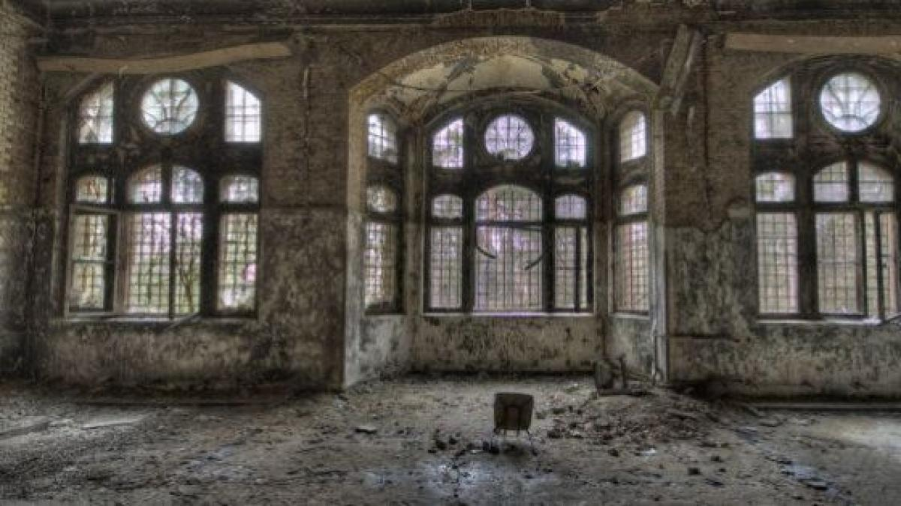

Hospital Militar de Beelitz (Alemania)
Es famoso por sus edificios abandonados y su pasado como hospital militar nazi y soviético.

Explora Hospitales abandonados, misteriosos y paranormales de todo el mundo.
Es famoso por sus edificios abandonados y su pasado como hospital militar nazi y soviético.


Es famoso por sus edificios abandonados y su pasado como hospital militar nazi y soviético.